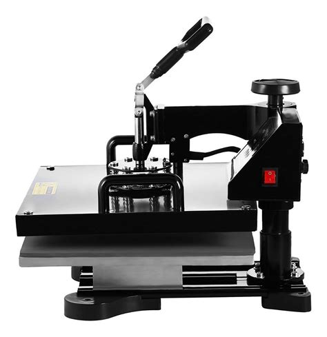

Iris sublimados paso por muchos nombres y personalidades para llegar a ser lo que son ahora. Todo comenzó en el año 2019 con una maquina de coser, una pollera y un sueño. Desde ese momento Iris ha formado parte de la vida y eventos de muchas familias.
IRIS SUBLIMADOS 2019
En el año 2019 Iris tuvo que dejar de producir debido a la crisis sanitaria que nos acompaña hasta el día de hoy. Medio año después de iniciada la pandemia Iris pudo retomar lentamente el trabajo con los cuidados y medidas necesarias. Nunca se bajo los brazos y con mucho esfuerzo se pudo comprar la sublimadora de tazas. Con poco trabajo, pero con las ganas intactas Iris permaneció un año en crecimiento. Apoyado por otros equipos de sublimadores que brindaron su trabajo tercerizado y a los cuales les agradecemos enormemente porque sin su impulso no hubiéramos llegado a donde estamos hoy.

IRIS SUBLIMADOS 2020/2021

Con mucho esfuerzo a fines del 2020, comienzos del 2021 se compro la plancha para estampar, una sublimadora revendida por personas que ya no se dedicaban a eso. Gracias a esa plancha pudimos dejar de hacer lo que antes se hacia con una plancha de mano y mucha paciencia ahora solo en segundos. Fue un gran cambio, no solo en avance tecnológico, si no que en producción, ya que llego con ella mucho trabajo que hasta el día de hoy se mantiene.
IRIS SUBLIMADOS 2022
En el 2022 nos encontramos con nuevos desafíos y retos. Nos dimos cuenta que aún nos queda muchísimo camino por recorrer. Queremos avanzar y tener nuestro lugar físico, expandir nuestra maquinaria y crear nuestra propia marca, un trabajo que se va construyendo día a día.
El equipo de Iris sublimados esta enormemente agradecido para cada compra que realizan, por cada interacción que tienen con nosotros y por cada critica constructiva que siempre nos ayuda a mejorar.
Gracias a todos
Atentamente el equipo de Iris sublimados
Gracias a todos
Atentamente el equipo de Iris sublimados